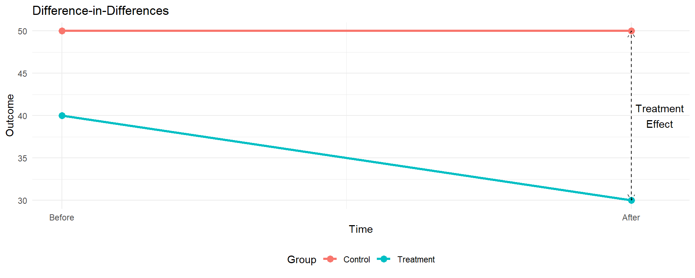
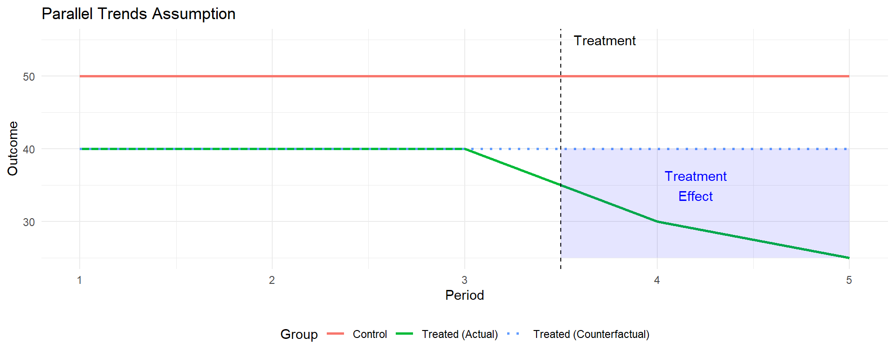

Difference-in-differences Design
Econometrics with R
Dr. Lucas Sempé
Difference-in-Differences: Overview
- Core idea: Compare changes over time between treated and untreated groups
- Setting: Panel or repeated cross-sectional data with pre/post periods
- Advantage: Controls for time-invariant differences between groups
- Assumption: Relies on “parallel trends” assumption
- Applications: Widely used for policy evaluation
- Types: Two-way fixed effects, staggered adoption, triple differences, matched DID, etc.
How DiD Works
Difference-in-Differences = (TreatAfter - TreatBefore) - (ControlAfter - ControlBefore)
First Difference:
- Within treatment group over time
- Controls for time-invariant characteristics
- But confounded by time trends
Second Difference:
- Between the first differences
- Controls for time trends affecting both groups
- Isolates the treatment effect
| Group | Before | After | Difference |
|---|---|---|---|
| Treatment | 40 | 30 | -10 |
| Control | 50 | 50 | 0 |
| Difference | -10 | -20 | -10 |
- Treatment effect = -10
Program Case: DiD Setup
- We compare changes in waste expenditures for enrolled vs. non-enrolled industries
- Both groups are in treatment zones (where the program was offered)
- We have data for two periods: before and after the program implementation
- DiD can help address selection bias if trends would be parallel without the program
Implementing DiD with Regression
# DiD regression without covariates
out_did <- lm_robust(waste_management_costs ~ round * enrolled,
data = df %>% filter(treatment_zone == 1),
clusters = zone_identifier)
# DiD regression with covariates
out_did_wcov <- lm_robust(waste_management_costs ~ round * enrolled +
age_manager + age_deputy +
female_manager + foreign_owned +
staff_size +
advanced_filtration + facility_area +
recycling_center_distance,
data = df %>% filter(treatment_zone == 1),
clusters = zone_identifier)Where:
round: Time indicator (0=before, 1=after)enrolled: Treatment indicator (1=enrolled, 0=not enrolled)round:enrolled: Interaction term capturing the DiD effect
Interpreting DiD Regression Coefficients
In the model: \(Y = \beta_0 + \beta_1 \text{Round} + \beta_2 \text{Enrolled} + \beta_3 (\text{Round} \times \text{Enrolled}) + \varepsilon\)
- \(\beta_0\): Baseline outcome for non-enrolled group
- \(\beta_1\): Time trend (change for non-enrolled)
- \(\beta_2\): Baseline difference between groups
- \(\beta_3\): DiD estimate (treatment effect)
| Period | Not Offered | Offered | Difference |
|---|---|---|---|
| Before (Round=0) | β₀ | β₀ + β₂ | β₂ |
| After (Round=1) | β₀ + β₁ | β₀ + β₁ + β₂ + β₃ | β₂ + β₃ |
| Difference | β₁ | β₁ + β₃ | β₃ |
DiD Results for the Program
| No covariate adj. | With covariate adj. | |
|---|---|---|
| (Intercept) | 2079.149*** | 2750.032*** |
| (17.361) | (46.739) | |
| round | 151.342*** | 144.925*** |
| (35.964) | (35.826) | |
| enrolled | −630.180*** | −157.272*** |
| (19.449) | (12.937) | |
| round × enrolled | −816.293*** | −816.181*** |
| (32.082) | (32.122) | |
| age_manager | 7.845*** | |
| (1.107) | ||
| age_deputy | −1.559 | |
| (1.290) | ||
| female_manager | 105.010** | |
| (32.010) | ||
| foreign_owned | −223.413*** | |
| (23.466) | ||
| staff_size | −198.522*** | |
| (3.907) | ||
| advanced_filtration | −233.329*** | |
| (15.461) | ||
| facility_area | 9.668** | |
| (2.945) | ||
| recycling_center_distance | −0.250 | |
| (0.311) | ||
| Num.Obs. | 9919 | 9919 |
| R2 | 0.344 | 0.551 |
| R2 Adj. | 0.343 | 0.550 |
| + p < 0.1, * p < 0.05, ** p < 0.01, *** p < 0.001 |
Interpretation:
- Initial difference: Enrolled industries spent $630.2 less at baseline
- Time trend: Non-enrolled industries increased spending by $151.3
- Treatment effect: Program reduced expenditures by $816.3
- Result is statistically significant but below the 1,000 AED threshold
Visualizing the DiD Result

The Parallel Trends Assumption
The key identifying assumption in DiD:
In the absence of treatment, the difference between treatment and control groups would remain constant over time
- Cannot be directly tested in the post-treatment period
- Can examine pre-treatment trends if multiple periods available
- Can also use placebo tests with different groups or outcomes

Threats to the Parallel Trends Assumption
- Differential time shocks
- Events affecting one group but not the other
- Example: Other policies targeting the same population
- Compositional changes
- Changes in group makeup over time
- Example: Selective migration or attrition
- Anticipation effects
- Behavior changes before treatment starts
- Example: Postponing healthcare in anticipation of insurance
- Feedback effects
- Treatment affects the control group
- Example: Spillovers or general equilibrium effects
Testing Parallel Pre-Trends
# Create simple dataset with 20 observations
did_data <- data.frame(
# 4 time periods (0-3), treatment in period 2
time = rep(0:3, 5),
# 10 units (5 treated, 5 control)
unit = rep(1:10, each = 4),
# Treatment indicator
treated = rep(c(rep(0, 5), rep(1, 5)), each = 4),
# Period indicator (pre/post)
post = rep(c(0,0,1,1), 10)
)
# Base outcome - parallel trends
did_data$y_parallel <- 10 + 2*did_data$time + 3*did_data$treated +
5*(did_data$post*did_data$treated) + rnorm(40, 0, 1)
# Non-parallel trends
did_data$y_nonparallel <- did_data$y_parallel +
2*did_data$time*did_data$treated
Variants of DiD
Two-way fixed effects (TWFE)
Staggered adoption
- Treatment implemented at different times
- Recent methods: Callaway & Sant’Anna, Sun & Abraham
Triple differences (DDD)
- Additional comparison dimension
- Further controls for potential confounders
Synthetic control
- Weighted combination of control units
- Data-driven approach to creating the counterfactual
DiD vs. Other Methods
DiD:
- Effect: -$8.16
- Uses longitudinal data
- Addresses selection bias
- Requires parallel trends
Recommendation:
Do not scale up
RDD:
- Effect: -$9.03
- Uses eligibility threshold
- Local to cutoff
- Sharp discontinuity
Recommendation:
Do not scale up
Randomized:
- Effect: -$10.14
- Gold standard
- Average effect
- Highest precision
Recommendation:
Scale up nationally
Why the difference with randomized results?
- Selection bias not fully addressed by DiD
- Non-enrolled industries may have different trends
- Parallel trends assumption may not hold
When to Use DiD
Use when:
- Panel or repeated cross-sectional data available
- Pre-treatment data exists for both groups
- Parallel trends assumption is plausible
- Selection based on time-invariant factors
Common applications:
- Policy changes affecting some groups but not others
- Phased program implementation
- Natural experiments creating treatment/control groups
Implementing DiD in R
# Basic DiD implementation
# Step 1: Basic DiD regression
did_model <- lm(
outcome ~ treatment*post + controls,
data = data
)
# Step 2: With fixed effects
library(fixest)
did_fe <- feols(
outcome ~ treatment*post | unit + time,
data = data,
cluster = "group_id"
)
# Step 3: Staggered adoption with modern methods
library(did)
staggered_did <- att_gt(
yname = "outcome",
tname = "time",
idname = "id",
gname = "first_treated",
data = data
)Common Pitfalls in DiD Analysis
- Violation of parallel trends
- Most crucial assumption
- Test with pre-treatment data when possible
- Serial correlation
- Outcomes correlated over time
- Use clustered standard errors
- Improper handling of covariates
- Time-varying controls may be affected by treatment
- Better to use baseline covariates interacted with time
- Heterogeneous treatment effects over time
- Effects that grow or fade
- Consider event study design
From Analysis to Policy Decision
Policy question: Should the program be scaled up nationally?
Decision criterion: Program must reduce businesses’ expenditures by at least 1,000 AED.
Results from DiD estimation:
- Effect: -816 AED (95% CI: [-753, -879])
- Point estimate below the 1,000 AED threshold
- Effect robust to inclusion of covariates
Recommendation: Based on the DiD estimate, the program should not be scaled up nationally.
Key Takeaways
- DiD compares changes over time between treatment and control groups
- DiD controls for time-invariant differences between groups
- The key assumption is parallel trends in the absence of treatment
- The Program reduced waste expenditures by 816 according to DiD
- This estimate is below the 1,000 AED threshold for scaling up nationally
Next Session
Matching Methods: Creating comparable treatment and control groups based on observable characteristics